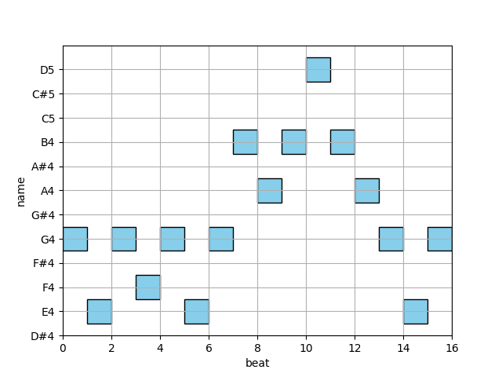

Note
Go to the end to download the full example code.
Boundary detection#
This example demonstrates how to detect boundaries in a MIDI file using the boundary detection algorithm.
import matplotlib.pyplot as plt
from amads.algorithms import boundary
from amads.io import partitura_midi_import, pianoroll
from amads.music import example
# Load example MIDI file
my_midi_file = example.fullpath("midi/tempo.mid")
# Import MIDI using partitura
myscore = partitura_midi_import(my_midi_file, ptprint=False)
# Create piano roll visualization
fig = pianoroll(myscore)
# Detect boundaries and get strength values
strength_list = boundary(myscore)
print(strength_list)
# TODO: consider a graph sharing the same time axis as
# our score plot so that the "soft" boundary strengths could be
# accentuated. How do we visualize strength?
plt.show() # hello

/opt/hostedtoolcache/Python/3.10.16/x64/lib/python3.10/site-packages/partitura/io/importmidi.py:575: UserWarning: pitch spelling
warnings.warn("pitch spelling")
/opt/hostedtoolcache/Python/3.10.16/x64/lib/python3.10/site-packages/partitura/io/importmidi.py:658: UserWarning: create_part
part = create_part(
/opt/hostedtoolcache/Python/3.10.16/x64/lib/python3.10/site-packages/partitura/io/importmidi.py:658: UserWarning: add notes
part = create_part(
/opt/hostedtoolcache/Python/3.10.16/x64/lib/python3.10/site-packages/partitura/io/importmidi.py:658: UserWarning: add time sigs and measures
part = create_part(
/opt/hostedtoolcache/Python/3.10.16/x64/lib/python3.10/site-packages/partitura/io/importmidi.py:658: UserWarning: tie notes
part = create_part(
/opt/hostedtoolcache/Python/3.10.16/x64/lib/python3.10/site-packages/partitura/io/importmidi.py:658: UserWarning: find tuplets
part = create_part(
/opt/hostedtoolcache/Python/3.10.16/x64/lib/python3.10/site-packages/partitura/io/importmidi.py:658: UserWarning: done create_part
part = create_part(
staff_numbers {None}
measures [(1, 0, 1919), ('timesig', 4, 4), ('keysig', 0), (2, 1919, 3839), (3, 3839, 5759), (4, 5759, 7679), (5, 7679, 7681)]
div_to_quarter: div 1919 qtrs 4.0
div_to_quarter: div 0 qtrs 0.0
div_to_quarter: div 3839 qtrs 8.0
div_to_quarter: div 1919 qtrs 4.0
div_to_quarter: div 5759 qtrs 12.0
div_to_quarter: div 3839 qtrs 8.0
div_to_quarter: div 7679 qtrs 16.0
div_to_quarter: div 5759 qtrs 12.0
div_to_quarter: div 7681 qtrs 16.0
div_to_quarter: div 7679 qtrs 16.0
added measures to staff:
Staff at 0.000 delta 0.000 duration 16.000
Measure at 0.000 delta 0.000 duration 4.000
TimeSignature at 0.000 delta 0.000: 4/4
KeySignature at 4.000 delta 4.0000 flats
Measure at 4.000 delta 4.000 duration 4.000
Measure at 8.000 delta 8.000 duration 4.000
Measure at 12.000 delta 12.000 duration 4.000
div=0 -> qtr -3.9979166666666672
measure_map(0) [ 0 1919]
measure_number_map(0) 1
div_to_quarter: div 0 qtrs 0.0
Note or Rest start 0.0 item.start.t 0
ignoring 0-- Clef sign=G line=2 number=1
ignoring 0--1919 Measure number=1 name=1
ignoring 0-- TimeSignature 4/4
div_to_quarter: div 0 qtrs 0.0
Tempo start 0.0 tempo 1.6666666666666667
append_beat_tempo 1.6666666666666667 <amads.core.time_map.MapBeat object at 0x7fa535f656f0>
ignoring 0-- KeySignature fifths=0, mode=major (C)
div_to_quarter: div 481 qtrs 1.0020833333333334
Note or Rest start 1.0020833333333334 item.start.t 481
div_to_quarter: div 961 qtrs 2.002083333333333
Note or Rest start 2.002083333333333 item.start.t 961
div_to_quarter: div 1440 qtrs 3.0
Tempo start 3.0 tempo 1.8333318055568286
append_beat_tempo 1.8333318055568286 <amads.core.time_map.MapBeat object at 0x7fa535f64040>
div_to_quarter: div 1441 qtrs 3.002083333333333
Note or Rest start 3.002083333333333 item.start.t 1441
div_to_quarter: div 1919 qtrs 3.997916666666667
Note or Rest start 3.997916666666667 item.start.t 1919
ignoring 1919--3839 Measure number=2 name=2
div_to_quarter: div 1921 qtrs 4.002083333333333
Note or Rest start 4.002083333333333 item.start.t 1921
div_to_quarter: div 2401 qtrs 5.002083333333333
Note or Rest start 5.002083333333333 item.start.t 2401
div_to_quarter: div 2880 qtrs 6.0
Tempo start 6.0 tempo 1.499999250000375
append_beat_tempo 1.499999250000375 <amads.core.time_map.MapBeat object at 0x7fa535f650c0>
div_to_quarter: div 2881 qtrs 6.002083333333333
Note or Rest start 6.002083333333333 item.start.t 2881
div_to_quarter: div 3361 qtrs 7.002083333333333
Note or Rest start 7.002083333333333 item.start.t 3361
div_to_quarter: div 3839 qtrs 7.997916666666667
Note or Rest start 7.997916666666667 item.start.t 3839
ignoring 3839--5759 Measure number=3 name=3
div_to_quarter: div 3841 qtrs 8.002083333333333
Note or Rest start 8.002083333333333 item.start.t 3841
div_to_quarter: div 4320 qtrs 9.0
Tempo start 9.0 tempo 2.0
append_beat_tempo 2.0 <amads.core.time_map.MapBeat object at 0x7fa535f66500>
div_to_quarter: div 4321 qtrs 9.002083333333333
Note or Rest start 9.002083333333333 item.start.t 4321
div_to_quarter: div 4801 qtrs 10.002083333333333
Note or Rest start 10.002083333333333 item.start.t 4801
div_to_quarter: div 5281 qtrs 11.002083333333333
Note or Rest start 11.002083333333333 item.start.t 5281
div_to_quarter: div 5759 qtrs 11.997916666666667
Note or Rest start 11.997916666666667 item.start.t 5759
ignoring 5759--7679 Measure number=4 name=4
div_to_quarter: div 5760 qtrs 12.0
Tempo start 12.0 tempo 1.6666666666666667
append_beat_tempo 1.6666666666666667 <amads.core.time_map.MapBeat object at 0x7fa535f66bf0>
div_to_quarter: div 5761 qtrs 12.002083333333333
Note or Rest start 12.002083333333333 item.start.t 5761
div_to_quarter: div 6241 qtrs 13.002083333333333
Note or Rest start 13.002083333333333 item.start.t 6241
div_to_quarter: div 6720 qtrs 14.0
Tempo start 14.0 tempo 1.8333318055568286
append_beat_tempo 1.8333318055568286 <amads.core.time_map.MapBeat object at 0x7fa535f67fa0>
div_to_quarter: div 6721 qtrs 14.002083333333333
Note or Rest start 14.002083333333333 item.start.t 6721
div_to_quarter: div 7201 qtrs 15.002083333333333
Note or Rest start 15.002083333333333 item.start.t 7201
div_to_quarter: div 7679 qtrs 15.997916666666667
Note or Rest start 15.997916666666667 item.start.t 7679
ignoring 7679--7681 Measure number=5 name=5
events [['Note', 0.0, 1.0020833333333334, None, 67, 'n0', None], ['Note', 1.0020833333333334, 1.0, None, 64, 'n1', None], ['Note', 2.002083333333333, 1.0, None, 67, 'n2', None], ['Note', 3.002083333333333, 0.9958333333333333, None, 65, 'n3', 'start'], ['Note', 3.997916666666667, 0.004166666666666667, None, 65, 'n3a', 'stop'], ['Note', 4.002083333333333, 1.0, None, 67, 'n4', None], ['Note', 5.002083333333333, 1.0, None, 64, 'n5', None], ['Note', 6.002083333333333, 1.0, None, 67, 'n6', None], ['Note', 7.002083333333333, 0.9958333333333333, None, 71, 'n7', 'start'], ['Note', 7.997916666666667, 0.004166666666666667, None, 71, 'n7a', 'stop'], ['Note', 8.002083333333333, 1.0, None, 69, 'n8', None], ['Note', 9.002083333333333, 1.0, None, 71, 'n9', None], ['Note', 10.002083333333333, 1.0, None, 74, 'n10', None], ['Note', 11.002083333333333, 0.9958333333333333, None, 71, 'n11', 'start'], ['Note', 11.997916666666667, 0.004166666666666667, None, 71, 'n11a', 'stop'], ['Note', 12.002083333333333, 1.0, None, 69, 'n12', None], ['Note', 13.002083333333333, 1.0, None, 67, 'n13', None], ['Note', 14.002083333333333, 1.0, None, 64, 'n14', None], ['Note', 15.002083333333333, 0.9958333333333333, None, 67, 'n15', 'start'], ['Note', 15.997916666666667, 0.004166666666666667, None, 67, 'n15a', 'stop']]
BEGIN retie_note ['Note', 3.002083333333333, 0.9958333333333333, None, 65, 'n3', 'start']
search for group Note 65 65 <amads.core.basics.Staff object at 0x7fa535f66da0>
**** found one **** ['Note', 3.997916666666667, 0.004166666666666667, None, 65, 'n3a', 'stop']
GROUP BEFORE: [['Note', 3.002083333333333, 0.9958333333333333, None, 65, 'n3', 'start'], ['Note', 3.997916666666667, 0.004166666666666667, None, 65, 'n3a', 'stop']]
found bar at 4.0 absdiff 0.002083333333333215
GROUP AFTER: [['Note', 3.002083333333333, 0.9979166666666668, None, 65, 'n3', None], ['Note', 4.0, 0, None, 65, 'n3a', 'stop']]
BEGIN retie_note ['Note', 7.002083333333333, 0.9958333333333333, None, 71, 'n7', 'start']
search for group Note 71 71 <amads.core.basics.Staff object at 0x7fa535f66da0>
**** found one **** ['Note', 7.997916666666667, 0.004166666666666667, None, 71, 'n7a', 'stop']
GROUP BEFORE: [['Note', 7.002083333333333, 0.9958333333333333, None, 71, 'n7', 'start'], ['Note', 7.997916666666667, 0.004166666666666667, None, 71, 'n7a', 'stop']]
found bar at 8.0 absdiff 0.002083333333333215
GROUP AFTER: [['Note', 7.002083333333333, 0.9979166666666668, None, 71, 'n7', None], ['Note', 8.0, 0, None, 71, 'n7a', 'stop']]
BEGIN retie_note ['Note', 11.002083333333333, 0.9958333333333333, None, 71, 'n11', 'start']
search for group Note 71 71 <amads.core.basics.Staff object at 0x7fa535f66da0>
**** found one **** ['Note', 11.997916666666667, 0.004166666666666667, None, 71, 'n11a', 'stop']
GROUP BEFORE: [['Note', 11.002083333333333, 0.9958333333333333, None, 71, 'n11', 'start'], ['Note', 11.997916666666667, 0.004166666666666667, None, 71, 'n11a', 'stop']]
found bar at 12.0 absdiff 0.002083333333333215
GROUP AFTER: [['Note', 11.002083333333333, 0.9979166666666668, None, 71, 'n11', None], ['Note', 12.0, 0, None, 71, 'n11a', 'stop']]
BEGIN retie_note ['Note', 15.002083333333333, 0.9958333333333333, None, 67, 'n15', 'start']
search for group Note 67 67 <amads.core.basics.Staff object at 0x7fa535f66da0>
**** found one **** ['Note', 15.997916666666667, 0.004166666666666667, None, 67, 'n15a', 'stop']
GROUP BEFORE: [['Note', 15.002083333333333, 0.9958333333333333, None, 67, 'n15', 'start'], ['Note', 15.997916666666667, 0.004166666666666667, None, 67, 'n15a', 'stop']]
found bar at 16.0 absdiff 0.002083333333333215
GROUP AFTER: [['Note', 15.002083333333333, 0.9979166666666668, None, 67, 'n15', None], ['Note', 16.0, 0, None, 67, 'n15a', 'stop']]
after re-tie notes, events:
[['Note', 0.0, 1.0020833333333334, None, 67, 'n0', None], ['Note', 1.0020833333333334, 1.0, None, 64, 'n1', None], ['Note', 2.002083333333333, 1.0, None, 67, 'n2', None], ['Note', 3.002083333333333, 0.9979166666666668, None, 65, 'n3', None], ['Note', 4.0, 0, None, 65, 'n3a', 'stop'], ['Note', 4.002083333333333, 1.0, None, 67, 'n4', None], ['Note', 5.002083333333333, 1.0, None, 64, 'n5', None], ['Note', 6.002083333333333, 1.0, None, 67, 'n6', None], ['Note', 7.002083333333333, 0.9979166666666668, None, 71, 'n7', None], ['Note', 8.0, 0, None, 71, 'n7a', 'stop'], ['Note', 8.002083333333333, 1.0, None, 69, 'n8', None], ['Note', 9.002083333333333, 1.0, None, 71, 'n9', None], ['Note', 10.002083333333333, 1.0, None, 74, 'n10', None], ['Note', 11.002083333333333, 0.9979166666666668, None, 71, 'n11', None], ['Note', 12.0, 0, None, 71, 'n11a', 'stop'], ['Note', 12.002083333333333, 1.0, None, 69, 'n12', None], ['Note', 13.002083333333333, 1.0, None, 67, 'n13', None], ['Note', 14.002083333333333, 1.0, None, 64, 'n14', None], ['Note', 15.002083333333333, 0.9979166666666668, None, 67, 'n15', None], ['Note', 16.0, 0, None, 67, 'n15a', 'stop']]
Before inserting note:
Note at 0.000 delta 0.000 duration 1.002 pitch G4
Before inserting note:
Note at 1.002 delta 1.002 duration 1.000 pitch E4
Before inserting note:
Note at 2.002 delta 2.002 duration 1.000 pitch G4
Before inserting note:
Note at 3.002 delta 3.002 duration 0.998 pitch F4
Before inserting note:
Note at 0.002 delta 0.002 duration 1.000 pitch G4
Before inserting note:
Note at 1.002 delta 1.002 duration 1.000 pitch E4
Before inserting note:
Note at 2.002 delta 2.002 duration 1.000 pitch G4
Before inserting note:
Note at 3.002 delta 3.002 duration 0.998 pitch B4
Before inserting note:
Note at 0.002 delta 0.002 duration 1.000 pitch A4
Before inserting note:
Note at 1.002 delta 1.002 duration 1.000 pitch B4
Before inserting note:
Note at 2.002 delta 2.002 duration 1.000 pitch D5
Before inserting note:
Note at 3.002 delta 3.002 duration 0.998 pitch B4
Before inserting note:
Note at 0.002 delta 0.002 duration 1.000 pitch A4
Before inserting note:
Note at 1.002 delta 1.002 duration 1.000 pitch G4
Before inserting note:
Note at 2.002 delta 2.002 duration 1.000 pitch E4
Before inserting note:
Note at 3.002 delta 3.002 duration 0.998 pitch G4
Something is wrong; could not find measure for ['Note', 16.0, 0, None, 67, 'n15a', 'stop']
[(0.0, 1), (1.0020833333333334, 0.0), (2.002083333333333, 0.0792702879157893), (3.002083333333333, 0.05249999787500048), (4.002083333333333, 0.05354116478155189), (5.002083333333333, 0.07874999681250064), (6.002083333333333, 0.05625000093749986), (7.002083333333333, 0.25), (8.002083333333333, 0.08854116628155156), (9.002083333333333, 0.052499997875000426), (10.002083333333333, 0.07874999681250064), (11.002083333333333, 0.07874999681250064), (12.002083333333333, 0.05354116478155189), (13.002083333333333, 0.052499997875000426), (14.002083333333333, 0.07874999681250064), (15.002083333333333, 0.0)]
Total running time of the script: (0 minutes 0.721 seconds)